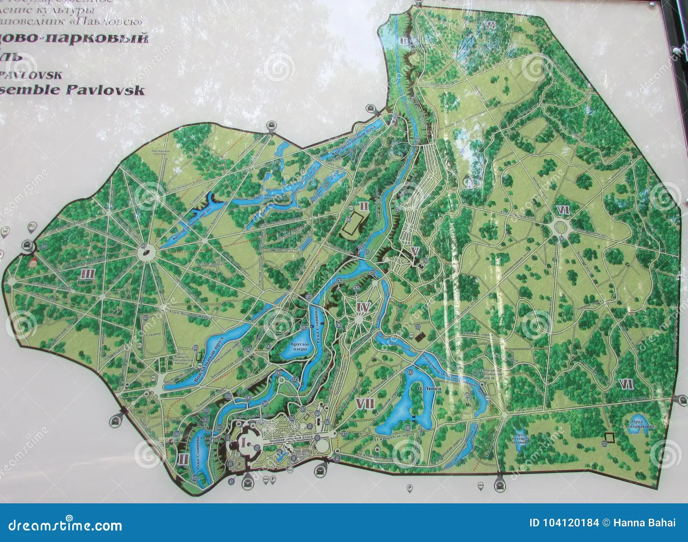

<section id="disponibilidad" class="vista active">

    <section class="mapa">
        

        <!-- Ejemplo de lote interactivo -->
        <div class="lote vendido" id="vendido" style="top: 50px; left: 80px;"></div>
        <div class="lote disponible" id="disponible" style="top: 50px; left: 120px;"></div>
        <div class="lote reservado" id="reservado" style="top: 50px; left: 160px;"></div>
        <div class="lote bloqueado" id="bloqueado" style="top: 50px; left: 200px;"></div>
    </section>

    <section class="leyenda">
        <span class="leyenda-item disponible">Disponible</span>
        <span class="leyenda-item reservado">Reservado</span>
        <span class="leyenda-item vendido">Vendido</span>
        <span class="leyenda-item bloqueado">Bloqueado</span>
    </section>
</section>